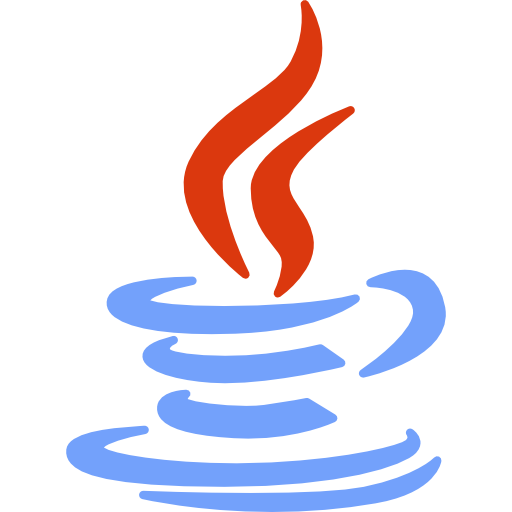

La Programación Orientada a Objetos (POO), o en inglés OOP (Object Oriented Programming), es un paradigma de programación que pretende desarrollar aplicaciones basándose en el comportamiento de los objetos del mundo real.
El lenguaje de programación Java es un exponente de la programación orientada a objetos. Un pequeño ejemplo de un código en Java sería:

public class Circulo {
Punto centro;
int radio;
Circulo(Punto centro, int radio) {
this.centro = centro;
this.radio = radio;
}
}